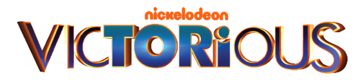
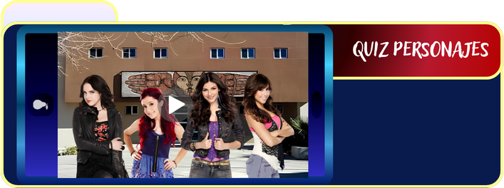

Estoy aburrido de dar clase y encontré esto !!Esta pagina es genial¡¡ pero lo seria aun más si yo fuera parte del test.

Queremos que conozcas más a fondo los personajes y también nos gustaría que pudieras hacer el quiz y darte cuenta de quien serías si fueras parte de Victorious.
Victorious sigue a un grupo de jóvenes que descubren y desarrollan sus talentos en un entorno lleno creatividad. Entre amistades, proyectos, cada personaje encuentra su propia forma de expresarse y destacar Tal vez hace unos años esta serie nos parecía surrealista, pero hoy es muy fácil identificarnos con ella.